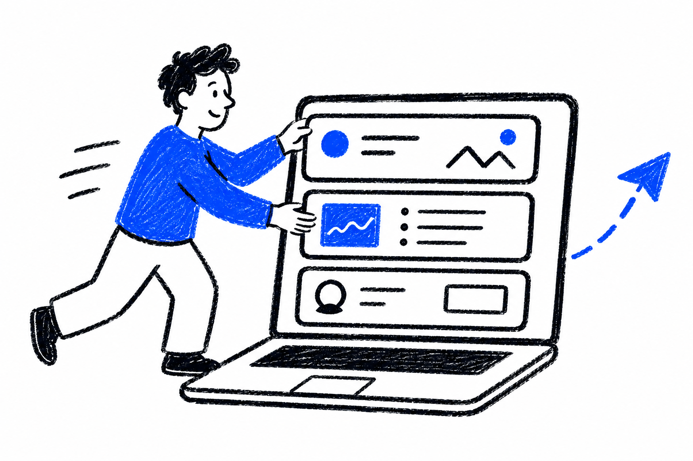
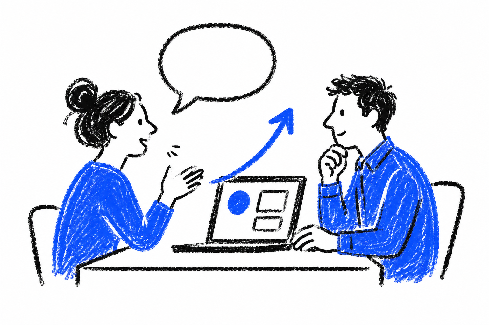
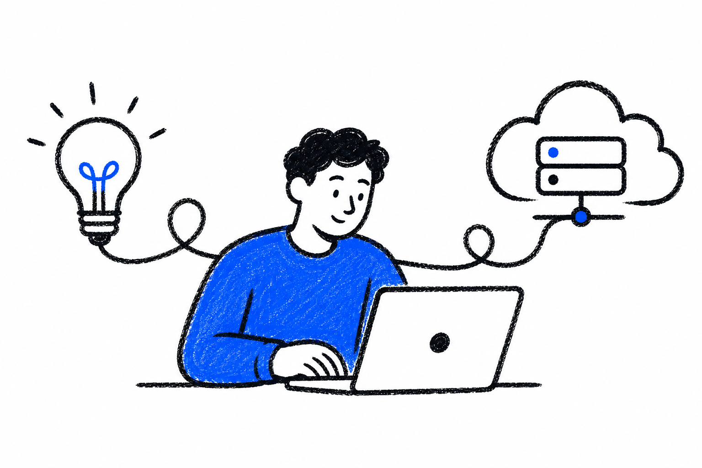
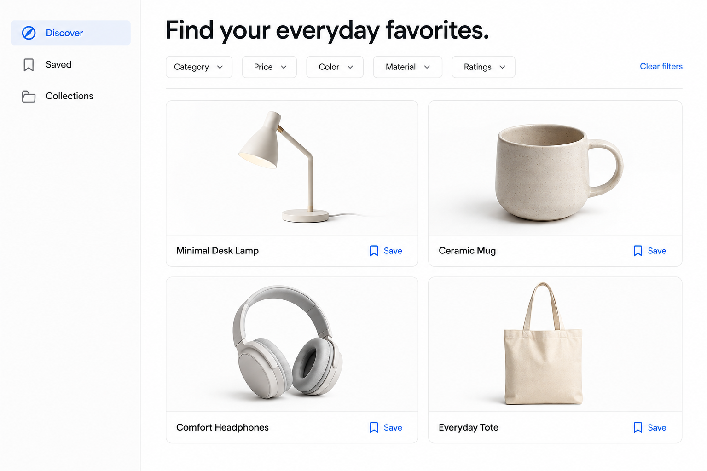
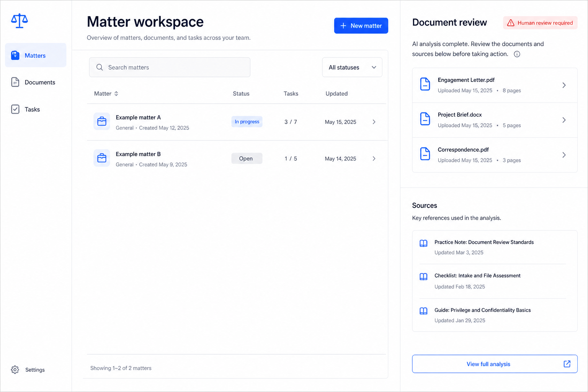
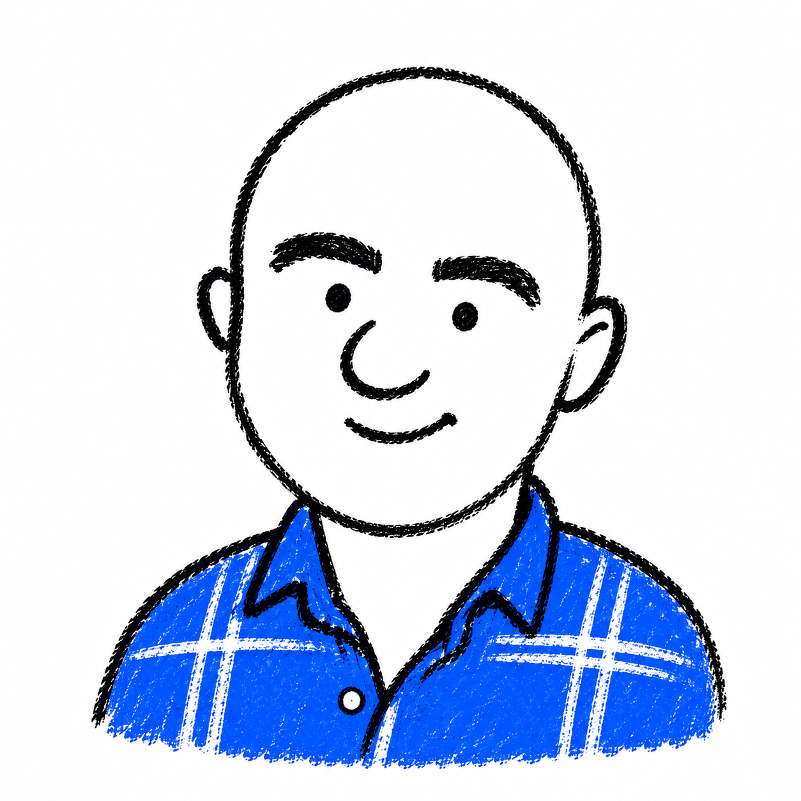

01MVP in days and weeks,
not months.
A focused first release that gets the core proposition into people's hands. Clear scope, fast decisions, and a short path to learning.
From business ambition to MVP
Get to market in weeks.
A flexible consulting plan focused on market validation. Test the proposition, build a focused MVP, and learn from real customers—with product, design, and development connected from concept to launch.
What we bringFrom the why, to the what, and finally the how.
01 / Services
The skills and ownership to get your product moving, with consumer insight at the heart of what we build.

01A focused first release that gets the core proposition into people's hands. Clear scope, fast decisions, and a short path to learning.

02Understand what people need, test the assumptions, and bring those insights into the product, the experience, and the priorities.

03Product thinking, design, full stack development, deployment, and hosting. Connected from the first conversation to a live, working product.
02 / What we bring
Product, design, and development skills to connect your business goals to a product people can use. A clear path from the opportunity to the first release.
Translate business goals into a product direction. Identify the user problem, define the MVP, and focus on what will move the business forward.
Product managementShape the experience through clear journeys, prototypes, and practical design. Test the important assumptions before committing to a full build.
Experience & designDevelop across the stack, connect the systems, and take the MVP to market. Learn from real use and give the next iteration a clear direction.
Full stack development03 / Projects
A look at product concepts across commerce, legal operations, and the way product teams work.

Sample concept previewExploring how shoppers find products that fit their needs, with discovery at the center of the experience.

Sample concept previewExploring how agents can support document work and matter workflows, with people in control of the review.
 Sample concept preview
Sample concept preview Exploring a teammate that helps with research, product briefs, and the everyday work of moving ideas forward.
04 / About

decisionos brings product management, design, and development together to help businesses turn ambition into a working product. Fractional product building, backed by 15 years of experience across the disciplines.
We start with the consumer and the business problem. From there, we shape the proposition, define a focused MVP, and work through the experience and the systems that make it possible.
Our approach is hands-on: the decisions, the design, and the code. We connect strategy with execution and take ownership through development, deployment, and hosting, so the path from concept to market stays clear.
Have something in mind?
{kind=link}
{kind=link}